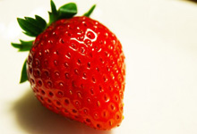
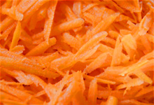
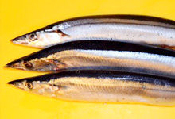
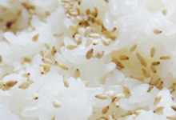

イチゴ（苺、莓、Fragaria）はバラ科の多年草。食用として供されている部分は花托（花床ともいう）であり果実ではない。

ニンジンは原産地のアフガニスタン周辺で東西に分岐し、世界各地に伝播した。オランダを通りイギリスへと西方へ伝来しなが

サンマ（秋刀魚、学名：Cololabis saira） は、ダツ目-ダツ上科-サンマ科-サンマ属に分類される、海棲硬骨魚の1種。
ヨット (yacht) は、レジャー用船艇を広く意味する言葉で、その中でも特に次の2つを指す。大型（個人船としては）で豪華

胡麻塩（ごましお）とは、焼き塩と炒りゴマを混ぜ合わせた調味料。ほうろくやフライパンで作るのが一般的であり、大きく分け
テキストはWikipediaより